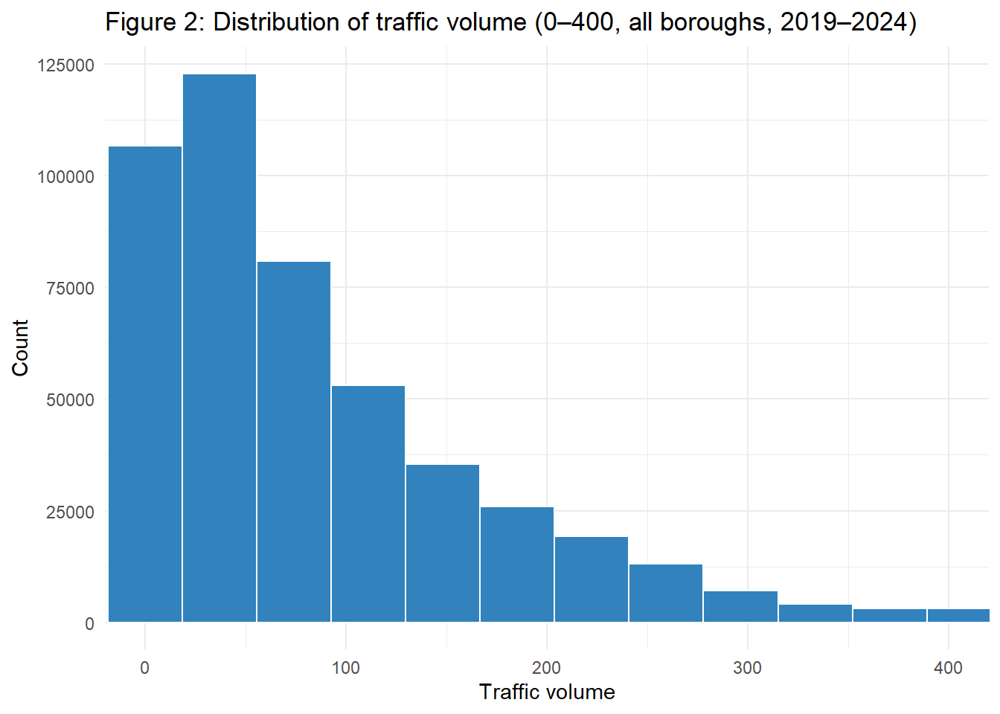
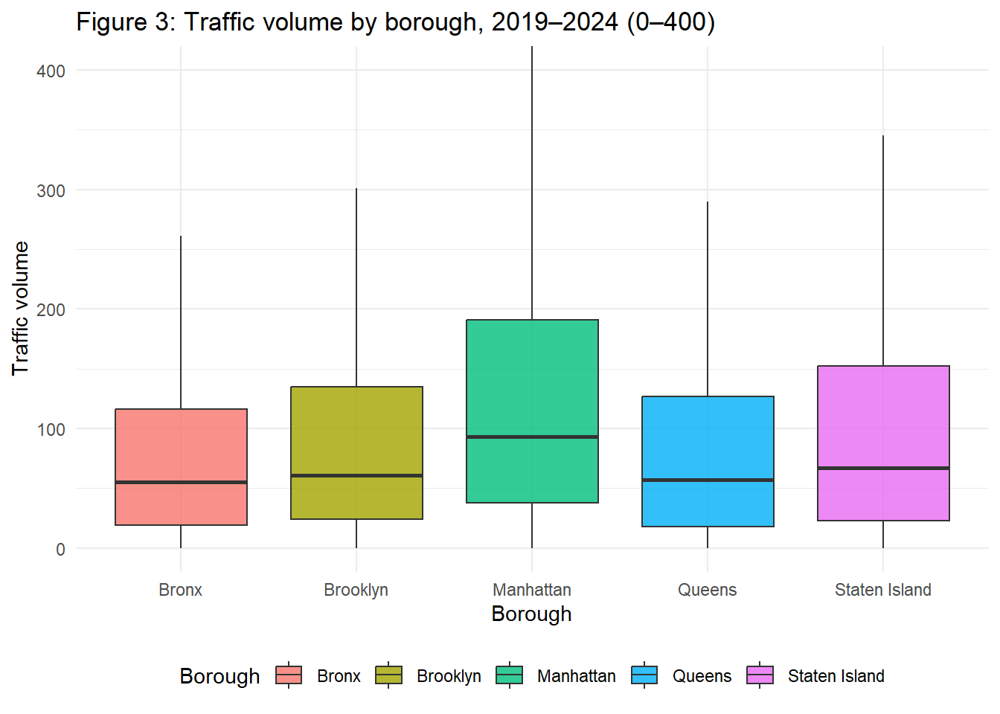
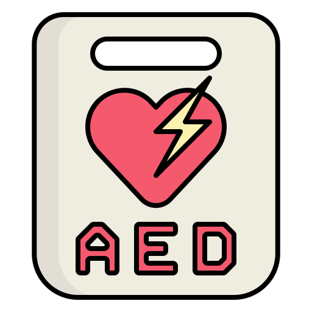

Exploratory Overview
This page provides an exploratory summary of three datasets used in this project:
- NYC Leading Causes of Death in 2021
- Automated Traffic Volume Counts (2019–2024)
- NYC Automated External Defibrillator (AED) Inventory
These summaries help us understand patterns of mortality burden, congestion levels, and AED accessibility across boroughs, and they motivate our later analysis linking traffic conditions to emergency response readiness.
 Leading causes of death
Leading causes of death
Table 1 shows that in 2021, diseases of the heart caused the highest number of deaths in NYC (more than 16,500). This is much higher than any other cause. Figure 1 shows this visually: the bar for heart disease is the longest. Because heart problems can lead to sudden cardiac arrest, this information supports why studying AED access is important. Quick defibrillation can save lives, so understanding AED availability in each borough matters.
leading_clean2 = leading_clean |>
mutate(
cause_name = str_replace(leading_cause, " \\(.*\\)$", "")
)
death_baseline = leading_clean2 |>
filter(year == 2021) |>
group_by(cause_name) |>
summarise(
total_deaths = sum(deaths, na.rm = TRUE),
.groups = "drop"
) |>
arrange(desc(total_deaths))
death_baseline_display = death_baseline |>
mutate(
total_deaths = format(total_deaths, big.mark = ",", scientific = FALSE)
) |>
rename(
`Cause of death` = cause_name,
`Total deaths (2021)` = total_deaths
)
death_baseline_display |>
kable(
caption = "Table 1. Leading causes of death in NYC, 2021",
format = "html"
) |>
kable_styling(
full_width = FALSE,
bootstrap_options = c("striped", "hover", "bordered")
)| Cause of death | Total deaths (2021) |
|---|---|
| Diseases of Heart | 16,568 |
| All Other Causes | 14,240 |
| Malignant Neoplasms | 11,578 |
| Covid-19 | 8,229 |
| Mental and Behavioral Disorders due to Accidental Poisoning and Other Psychoactive Substance Use | 2,692 |
| Cerebrovascular Disease | 2,149 |
| Influenza | 1,628 |
| Diabetes Mellitus | 1,535 |
| Chronic Lower Respiratory Diseases | 1,212 |
| Essential Hypertension and Renal Diseases | 1,150 |
| Accidents Except Drug Poisoning | 1,112 |
| Alzheimer’s Disease | 822 |
| Assault | 291 |
| Chronic Liver Disease and Cirrhosis | 188 |
| Intentional Self-Harm | 79 |
| Chronic Liver Diseases and Cirrhosis | 25 |
| Septicemia | 24 |
| Mental and Behavioral Disorders due to Use of Alcohol | 16 |
| Certain Conditions Originating in the Perinatal Period | 15 |
| Human Immunodeficiency Viruses Diseases | 7 |
death_baseline |>
slice_max(order_by = total_deaths, n = 10) |>
ggplot(aes(
x = reorder(cause_name, total_deaths),
y = total_deaths,
fill = total_deaths # map fill to deaths
)) +
geom_col() +
coord_flip() +
theme_minimal() +
scale_x_discrete(labels = ~ str_wrap(., width = 35)) + # wrap labels
scale_fill_gradient(low = "#fee0d2", high = "#de2d26") +
guides(fill = "none") +
labs(
title = "Figure 1: Top 10 causes of death in NYC, 2021",
x = "Cause of death",
y = "Total deaths"
)
 Traffic volume summary
Traffic volume summary
Table 2 summarizes traffic measurements for each borough. Queens and Brooklyn have the most measurements and the most monitored street segments. Manhattan has the highest mean and median traffic volume, which matches what we expect for a busy business and tourist area.
traffic_summary = traffic_clean |>
group_by(boro) |>
summarise(
n_measurements = n(),
unique_segments = n_distinct(segment_id),
mean_volume = mean(vol, na.rm = TRUE),
median_volume = median(vol, na.rm = TRUE),
.groups = "drop"
) |>
rename(borough = boro)
traffic_summary_display = traffic_summary |>
rename(
Borough = borough,
`Number of measurements` = n_measurements,
`Number of monitored segments` = unique_segments,
`Mean traffic volume` = mean_volume,
`Median traffic volume` = median_volume
)
traffic_summary_display |>
kable(
caption = "Table 2: Traffic volume summary by borough, 2019–2024",
format = "html",
digits = 2,
format.args = list(big.mark = ",") # add commas to all numeric cols
) |>
kable_styling(
full_width = FALSE,
bootstrap_options = c("striped", "hover", "bordered")
)| Borough | Number of measurements | Number of monitored segments | Mean traffic volume | Median traffic volume |
|---|---|---|---|---|
| Bronx | 64,572 | 88 | 86.53 | 55 |
| Brooklyn | 160,661 | 221 | 122.67 | 61 |
| Manhattan | 88,011 | 115 | 147.60 | 93 |
| Queens | 162,987 | 186 | 117.75 | 57 |
| Staten Island | 24,494 | 33 | 108.96 | 67 |
traffic_clean |>
ggplot(aes(x = vol)) +
geom_histogram(
bins = 60,
fill = "#3182bd", # bar color
color = "white" # bar border
) +
coord_cartesian(xlim = c(0, 400)) +
theme_minimal() +
labs(
title = "Figure 3: Distribution of traffic volume (0–400, all boroughs, 2019–2024)",
x = "Traffic volume",
y = "Count"
)
Figure 3 shows the distribution of traffic volume for all boroughs from 2019 to 2024. The shape of the distribution is right-skewed. Most traffic counts are below 100 vehicles, which we can consider low or medium traffic. Fewer observations fall between 100 and 200 vehicles, and only a small number go above 200, which we consider very high traffic.
This means that while many streets are not very busy, some specific areas experience heavy congestion. These high-traffic areas are more likely to delay emergency vehicles, such as ambulances, from reaching patients on time.
traffic_clean |>
ggplot(aes(x = boro, y = vol, fill = boro)) +
geom_boxplot(outlier.shape = NA, alpha = 0.8) +
coord_cartesian(ylim = c(0, 400)) +
theme_minimal() +
labs(
title = "Figure 4: Traffic volume by borough, 2019–2024 (0–400)",
x = "Borough",
y = "Traffic volume",
fill = "Borough"
) +
theme(
legend.position = "bottom"
)
In Figure 4, Manhattan’s boxplot shows the highest median traffic and the widest spread, meaning traffic levels vary a lot across locations. Queens and Brooklyn show medium levels, while the Bronx and Staten Island have lower and more stable traffic. These differences show how each borough has its own traffic profile, which can affect how quickly emergency services can reach someone.
traffic_trend = traffic_clean |>
group_by(yr, boro) |>
summarise(
mean_volume = mean(vol, na.rm = TRUE),
.groups = "drop"
)
ggplot(traffic_trend, aes(x = yr, y = mean_volume, color = boro, group = boro)) +
geom_line(size = 1.2) +
geom_point(size = 2) +
theme_minimal() +
labs(
title = "Figure 5: Mean traffic volume trend by borough (2019–2024)",
x = "Year",
y = "Mean traffic volume",
color = "Borough"
)
Figure 5 shows how traffic changed from 2019 to 2024. All boroughs show a drop in 2020 because of the COVID-19 shutdown. After that, traffic increases again but follows different patterns:
- Manhattan always has the highest levels and the biggest changes from year to year.
- Queens and Brooklyn increase in some years, especially around 2023.
- The Bronx remains more stable with lower overall traffic.
- Staten Island saw a substantial increase in 2022, followed by a significant drop, which could be due to fewer monitored locations.
These trends help us understand how changes in traffic over time might affect AED use or emergency response.
 AED summary
aed_summary = aed_clean |>
group_by(borough) |>
summarise(
n_facilities = n(), # number of AED-equipped locations
mean_aeds_per_site = mean(aed_num_aeds, na.rm = TRUE),
mean_trained_people = mean(aed_num_person_trained, na.rm = TRUE),
.groups = "drop"
)
aed_summary_display = aed_summary |>
rename(
Borough = borough,
`Number of AED-equipped sites` = n_facilities,
`Mean AEDs per site` = mean_aeds_per_site,
`Mean trained people per site` = mean_trained_people
)
aed_summary_display |>
kable(
caption = "Table 3: AED-equipped facilities and trained personnel by borough",
format = "html"
) |>
kable_styling(
full_width = FALSE,
bootstrap_options = c("striped", "hover", "bordered")
)| Borough | Number of AED-equipped sites | Mean AEDs per site | Mean trained people per site |
|---|---|---|---|
| Bronx | 988 | 1.042510 | 9.966599 |
| Brooklyn | 1411 | 1.102764 | 10.819149 |
| Manhattan | 3667 | 1.795200 | 17.464773 |
| Queens | 1228 | 1.478013 | 17.363115 |
| Staten Island | 345 | 1.228986 | 16.597101 |
Table 3 shows that AED availability is not equal across boroughs. Manhattan has the most AED sites (more than 3,600 locations). Queens and Brooklyn have moderate coverage, but the Bronx and Staten Island have the fewest AED sites. Figure 6, the pie chart, makes these differences easy to see. Manhattan takes up the largest share of AED locations.
These differences suggest that some boroughs may have better access to life-saving devices than others. This matters because quick access to an AED is critical during a cardiac emergency, where every minute affects survival.
## Borough-level traffic summary
traffic_summary = traffic_clean |>
group_by(boro) |>
summarise(
n_measurements = n(),
unique_segments = n_distinct(segment_id),
mean_volume = mean(vol, na.rm = TRUE),
median_volume = median(vol, na.rm = TRUE),
total_volume = sum(vol, na.rm = TRUE), # fine to keep for descriptive
.groups = "drop"
) |>
rename(borough = boro)
## Borough-level AED summary
aed_summary = aed_clean |>
group_by(borough) |>
summarise(
n_facilities = n(),
mean_aeds_per_site = mean(aed_num_aeds, na.rm = TRUE),
mean_trained_people = mean(aed_num_person_trained, na.rm = TRUE),
.groups = "drop"
)
## 🔗 Merge traffic + AED summaries (descriptive only)
borough_summary = traffic_summary |>
full_join(aed_summary, by = "borough")
## Table: combined summary (raw counts)
borough_summary_display = borough_summary |>
transmute(
Borough = borough,
`Number of traffic measurements` = n_measurements,
`Number of monitored segments` = unique_segments,
`Total traffic volume (2019–2024)` = total_volume,
`Number of AED-equipped sites` = n_facilities,
`Mean AEDs per site` = mean_aeds_per_site,
`Mean trained people per site` = mean_trained_people
)
borough_summary_display |>
kable(
caption = "Table X. Combined traffic and AED summary by borough",
format = "html",
digits = c(0, 0, 0, 0, 2, 2),
format.args = list(big.mark = ",")
) |>
kable_styling(
full_width = FALSE,
bootstrap_options = c("striped", "hover", "bordered")
)| Borough | Number of traffic measurements | Number of monitored segments | Total traffic volume (2019–2024) | Number of AED-equipped sites | Mean AEDs per site | Mean trained people per site |
|---|---|---|---|---|---|---|
| Bronx | 64,572 | 88 | 5,587,491 | 988 | 1.04 | 10 |
| Brooklyn | 160,661 | 221 | 19,709,072 | 1,411 | 1.10 | 11 |
| Manhattan | 88,011 | 115 | 12,990,181 | 3,667 | 1.80 | 17 |
| Queens | 162,987 | 186 | 19,191,509 | 1,228 | 1.48 | 17 |
| Staten Island | 24,494 | 33 | 2,668,922 | 345 | 1.23 | 17 |
## Plotly: traffic volume and AED sites by borough (scaled for visibility)
borough_summary_long = borough_summary |>
select(borough, total_volume, n_facilities) |>
pivot_longer(
cols = c(total_volume, n_facilities),
names_to = "metric",
values_to = "value"
) |>
mutate(
metric = recode(
metric,
total_volume = "Total traffic volume (2019–2024)",
n_facilities = "Number of AED-equipped sites"
)
)
# Scale each metric to 0–1 so both are visible
borough_summary_long_scaled = borough_summary_long |>
group_by(metric) |>
mutate(value_scaled = value / max(value, na.rm = TRUE)) |>
ungroup()
plot_ly(
data = borough_summary_long_scaled,
x = ~borough,
y = ~value_scaled,
color = ~metric,
colors = c("forestgreen", "lightcoral"), # green + purple
type = "bar",
text = ~paste0(
metric, "<br>",
"Borough: ", borough, "<br>",
"Raw value: ", scales::comma(value)
),
hoverinfo = "text"
) |>
layout(
barmode = "group",
title = "Relative traffic volume and AED sites by borough",
xaxis = list(title = "Borough"),
yaxis = list(title = "Relative value (scaled 0–1)")
)When we compare all data sources together, a consistent pattern appears. Cardiovascular disease is the leading cause of death in NYC, yet AED access and trained responders are not evenly distributed. Manhattan has the strongest AED coverage but also the highest traffic congestion, while boroughs with lower traffic—such as Staten Island—have fewer AED resources. These findings highlight the need to examine how AED availability and traffic conditions interact to meet population needs.